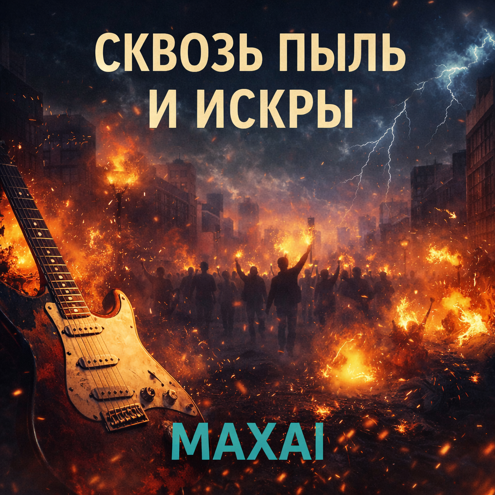

20.02.2026
На улицах серых мы ищем свет,
Где прошлое тонет, а будущего нет.
Гитары рвут ночи до хриплых нот,
И каждый наш шаг — это вызов вперёд.
Сквозь пыль и искры, туда, где гроза,
Мы строим миры из осколков вчера.
В хаосе звуков, в огне перемен,
Мы пишем историю своих времён.
Электричеством дышит пустой вокзал,
Тут крики и тени слились в карнавал.
Наш панк — это ярость, что рушит стекло,
А рок — это вера, что всё решено.
Сквозь пыль и искры, туда, где гроза,
Мы строим миры из осколков вчера.
В хаосе звуков, в огне перемен,
Мы пишем историю своих времён.
До прослушивания: Нерв, усталость от серости, внутреннее напряжение, желание вырваться.
После прослушивания: Разрядка и бодрость, ощущение силы, драйв и готовность идти вперёд несмотря ни на что.
Это трек про движение вперёд через шум, злость и перемены. Когда “будущего нет” и всё вокруг серое — остаётся воля, звук и собственный шаг. Не ждать, пока станет легче, а собирать новый мир из того, что осталось.
Два куплета задают картинку мира и состояние героя.
Припев — центральный лозунг и разгон, повторяется и усиливает ощущение движения и борьбы.
Голос — как “мы”, а не “я”: человек из города, который живёт на громкости, на нервах, на честности. Интонация прямая, резкая, без украшательств — чтобы звучало как вызов.